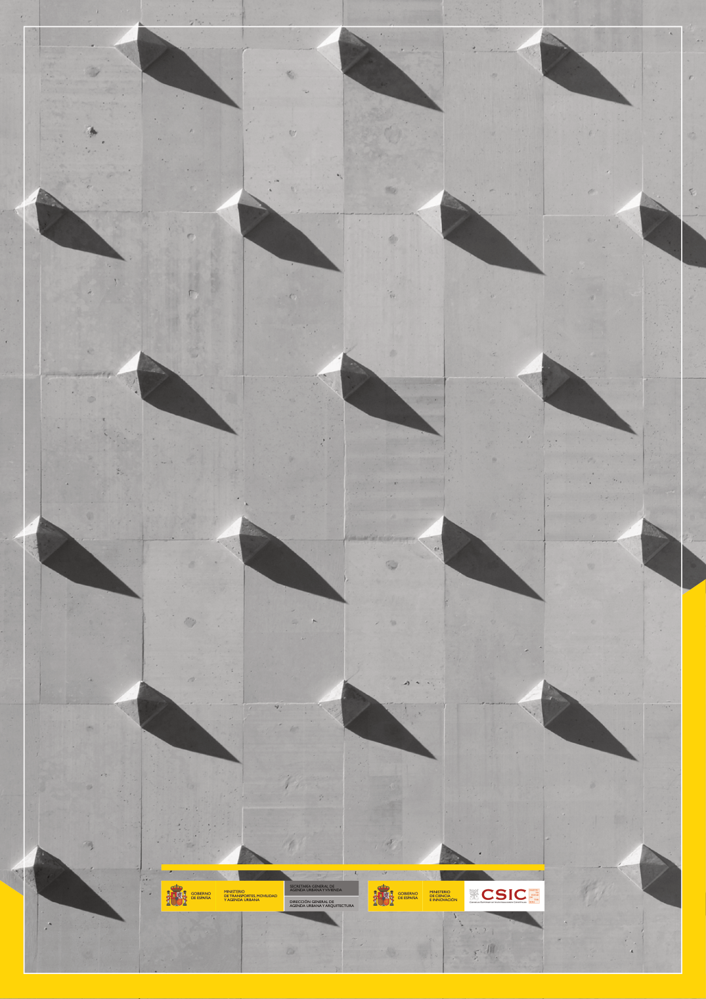

GUIA · Página 24 · versión sin-fecha
SHA256: 6765d0c34c51fbe193c3ed0c1378b710f98f086d16e2b68fc28ed36e143fdaea · página física 24 de 24 · métodos de encabezado
solo si están cotejados.
Formatos: Markdown · JSON de bloques · PDF p. 24 · imagen PNG
Página gráfica: el texto extraído puede ser parcial. Prevalece la imagen/PDF; depende de ellos.
SECRETARÍA GENERAL DE AGENDA URBANA Y VIVIENDA DIRECCIÓN GENERAL DE AGENDA URBANA Y ARQUITECTURA GOBIERNO DE ESPAÑA MINISTERIO DE TRANSPORTES, MOVILIDAD Y AGENDA URBANA GOBIERNO DE ESPAÑA MINISTERIO DE CIENCIA E INNOVACIÓN
